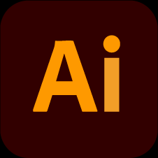
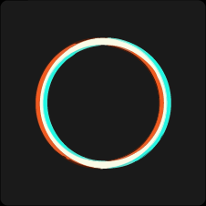
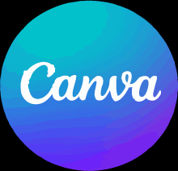

Joe Andre Villacres Guevara
Comunicador Digital · Diseñador
Soy comunicador digital con experiencia en Adobe Illustrador e inteligencia artificial, hago trabajos estudiantiles, hojas de vida, páginas web y publicidad. Me adapto a cualquier tipo de trabajo como vectorizar logotipos, diseños y alguna otra especialidad.
Experiencia
- 8 años en atención al cliente
- 2 años en COOPERATIVA TOURIS SAN FRANCISCO
- 1 año en AGEEPCOURIER ECUADOR S.A
- 6 MESES EN HOUSE GAMING CYBER
Pasatiempos

Vectorizar logos - crear diseños propios de banners - Mejorar velocidad de vectorizado - Impulsar redes sociales - buscar medios de aprendisaje para mayor velocidad en mi trabajo - gestionar mi carpeta de banners - logos - overlays - vectores - texturas etc
Experiencia



joeandremerecy
JOE ANDRE VILLACRES GUEVARA
0 publicaciones
20 seguidores
52 seguidos